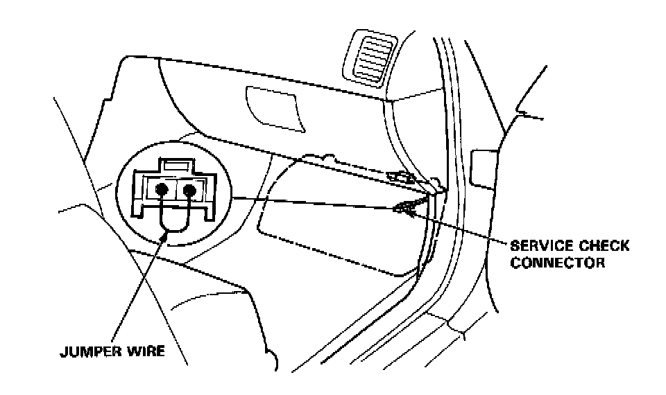
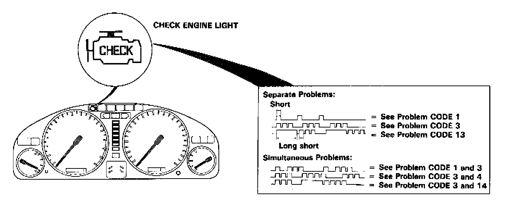
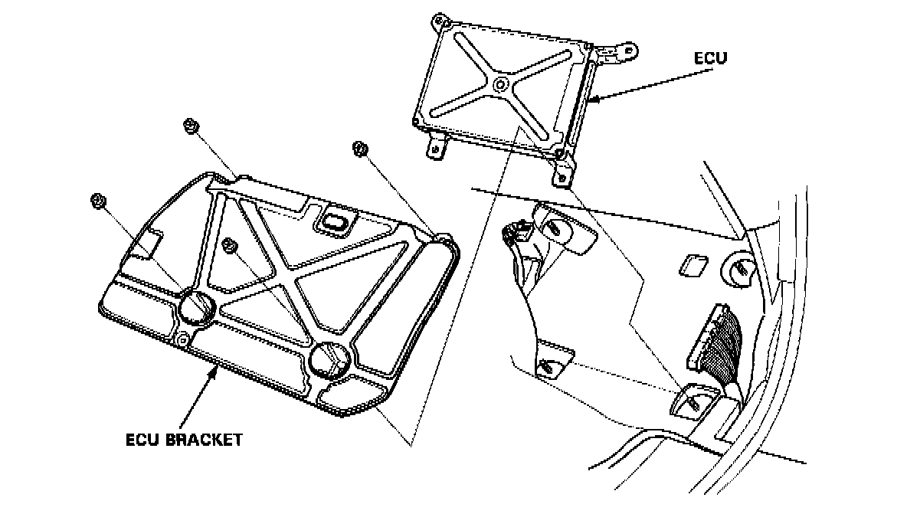
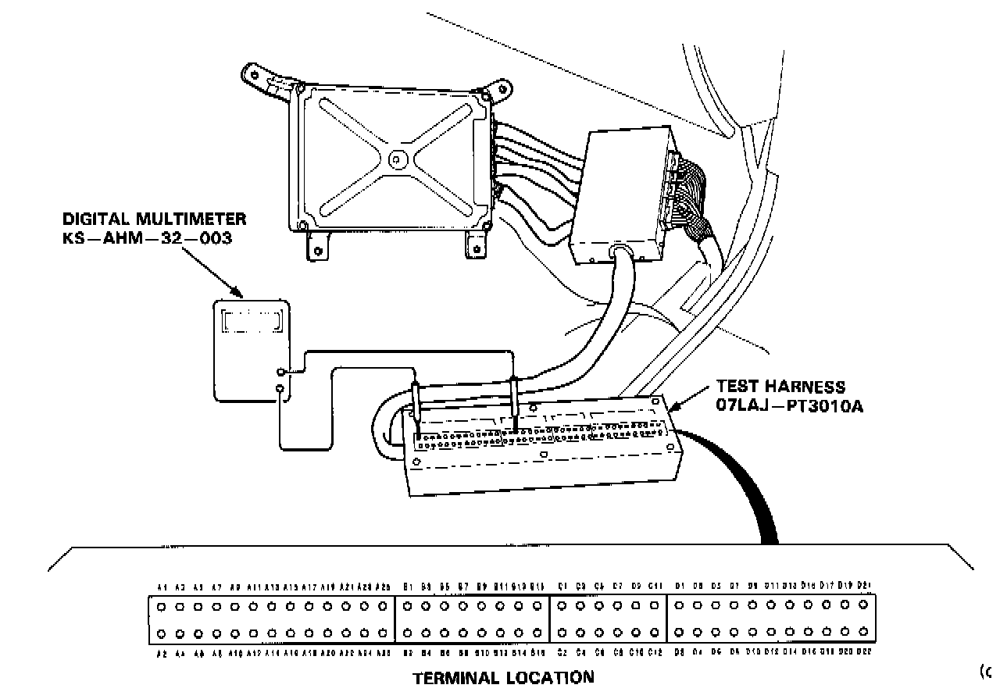
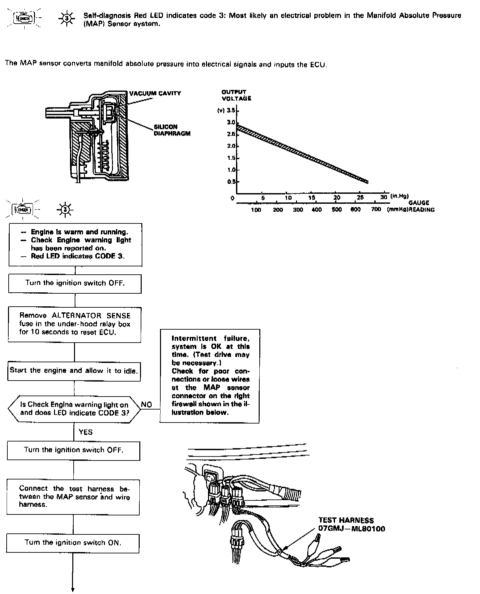
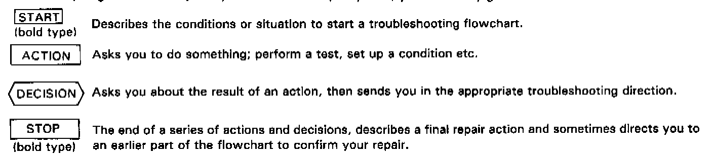

Troubleshooting Procedures

1. Connect the Service Check Connector terminals with a jumper wire as shown (the Service Check Connector is located under the dash on the passenger side of the car).

2. Note the CODE: the Check Engine light indicates a failure code by blinking frequency. The Check Engine light can indicate simultaneous component problems by blinking separate codes, one after another. Problem codes 1 through 9 are indicated by individual short blinks. Problem codes 10 through 59 are indicated by a series of long and short blinks. The number of long blinks equals the first digit, the number of short blinks equals the second digit.
Trouble Codes


If the inspection for a particular failure code requires the test harness, remove the right door sill molding and the small cover on the right kick panel and pull the carpet back to expose the ECU. Unbolt the ECU bracket. Then disconnect the connector from the cooling fan control unit and connect the test harness. Then check the system according to the procedure described for the appropriate code(s).

CAUTION:
- Puncturing the insulation on a wire can cause poor or intermittent electrical connections.
- For testing at connectors other than the system checker harness, bring the tester probe into contact with the terminal from the connector side of wire harness connectors in the engine compartment. For female connectors, just touch lightly with the tester probe and do not insert the probe.

A flow chart is designed to be used from start to final repair. It's like a map showing you the shortest distance. But beware; if you go off the "map" anywhere but a "stop" symbol, you can easily get lost.
NOTE:
- The term "Intermittent Failure" is used in these charts. It simply means a system may have had a failure, but it checks out OK through all your tests.
You may need to road test the car to reproduce the failure or if the problem was a loose connection, you may have unknowingly solved it while doing the tests.
In any event, even if the warning light on the dash does not come on check for poor connections or loose wires at all connectors related to the circuit that you are troubleshooting.
- "Open" and "Short" are common electrical terms. An open is a break in a wire or at a connection. A short is an accidental connection of a wire to ground.
In simple electronics, this usually means something won't work at all. In complex electronics like electronic control units, this can sometimes mean something works, but not the way it's supposed to
- If the electrical readings are not as specified when using the test harness, check the test harness connections before proceeding.